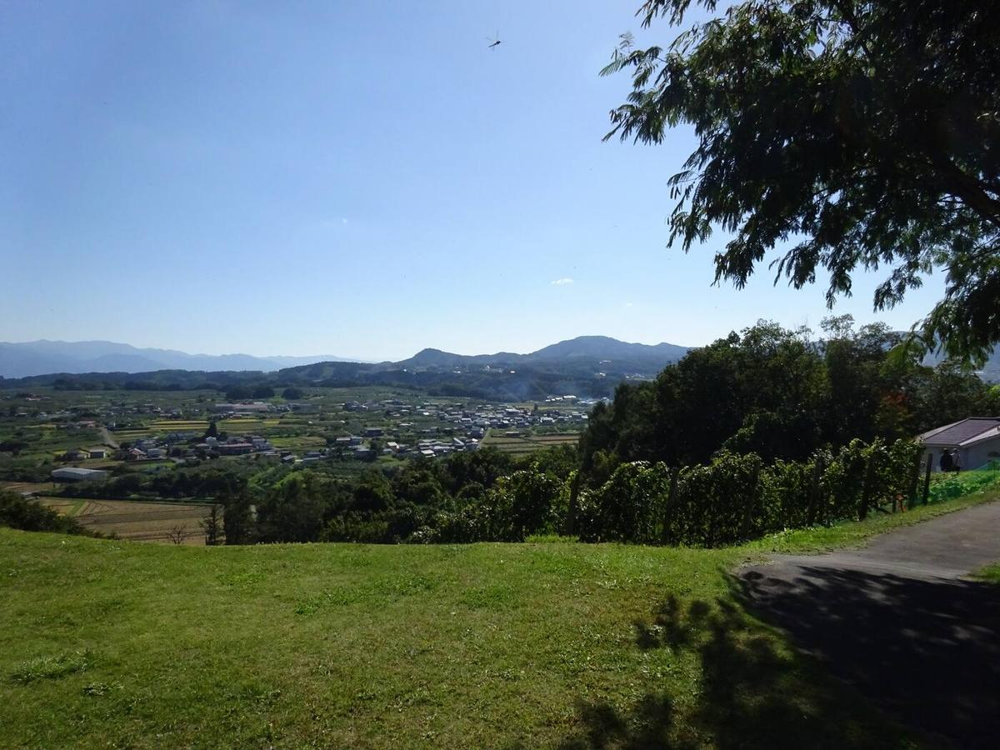
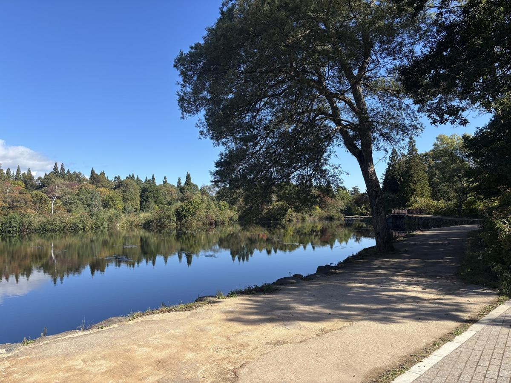

Myoko Days Niigata & Nagano
Make room for Myoko.
Lakes, waterfalls and mountain towns on one illustrated 3D map. Choose the places that draw you, and make the days your own.
Myoko Days
A little mountain air. A day by the lake. Time to follow your curiosity.
AFind your rhythm
Three ways to feel Myoko.
Slow down, follow your curiosity or head outdoors. Start with Restore, Discover or Move, then make the days your own.
 Google Earth
Google Earth
BOne map
Find your next day out on one 3D map.
Turn it, zoom in, and open any place. Add it to a free block, or choose where it goes. Your days sit beside the map, always in view.
Open the mapCHow it works
From a place that catches your eye to a day of your own.
Find your rhythm
Restore, Discover or Move. Begin with a plan shaped around your dates and walking comfort.
Add from the map
Open any place and add it. Choose a free block; if time is tight, you decide what moves.
Fine-tune and review
Drag anything to another morning or afternoon. Review the details, then keep a copy of your plan.
DLocal perspectives
The people who make Myoko.
People whose local knowledge shaped these days.
When you're ready
Make the days your own.
Choose a lake morning, a mountain view or a taste of local life. Leave room for the journey, and for yourself.
Plan your tripThe area
Mountains, lakes, local life.
Myoko is a hot-spring and mountain area on the Niigata–Nagano border. Known for snow in winter, it has lakes, waterfalls, rice fields and onsen towns the rest of the year.

AWhen
Choose your season.
You can plan from July to October. Each activity lists the months it runs.
July–August · Long light evenings, lake days and cool mornings in the highlands.
September–October · Rice harvest, clear air and the first colour on the mountains.
BGetting there
Two ways in by rail.
- Tokyo → NaganoHokuriku Shinkansen. Reserved seats are booked with JR East.
- Nagano → Myoko-KogenShinano Railway Kita-Shinano Line, a change of train at Nagano, ending at Myoko-Kogen.
- Or by JōetsumyōkōLeave the Hokuriku Shinkansen at Jōetsumyōkō and take the Echigo Tokimeki Myoko Haneuma Line through Arai and Sekiyama to Myoko-Kogen. The two lines meet at Myoko-Kogen, where you change trains across the platform.
- Around MyokoKeinan buses link the station with Ikenotaira. Your plan includes a chartered van on the days you have something booked, so the mountain and lakeside places are covered.
CGood to know
Before you go.
Planning essentials
- The last mile. Rail reaches the region and the chartered van takes you to each meeting point and back.
- Local operators. Run by people who live here.
- Seasons differ by activity. Each place lists the months it runs.
Customs
- Many small shops take cash only.
- A national park: stay on trails and take rubbish home.
- Onsen: wash first, no swimwear; some baths don't allow tattoos.
DQuestions
Asked often.
How do the days arrange themselves?
Half-day activities take a morning or afternoon; full-day outings reserve both. Manual additions never move other choices silently. If a block is full, choose where to move an activity or what to remove. Drag a place onto Auto-arrange when you want automatic sorting.
Can I change my saved plan?
Yes. Open Build and move or remove activities explicitly. Your choices stay in place until you decide otherwise.
Is it suitable for older parents?
Choose "Flat and short" walking when you plan. Activities above that effort level will not be added unless you raise the setting. The setting is a guide to effort, not an accessibility guarantee.
What if it rains?
Keep some free time in your days. Anything that cannot run in bad weather can be moved to another morning or afternoon.

01Plan
A few days, beautifully yours.
A few quick choices set the rhythm. You can change any of them later.
Choose your starting point.
Compare Restore, Discover and Move, or choose activities yourself on the map.